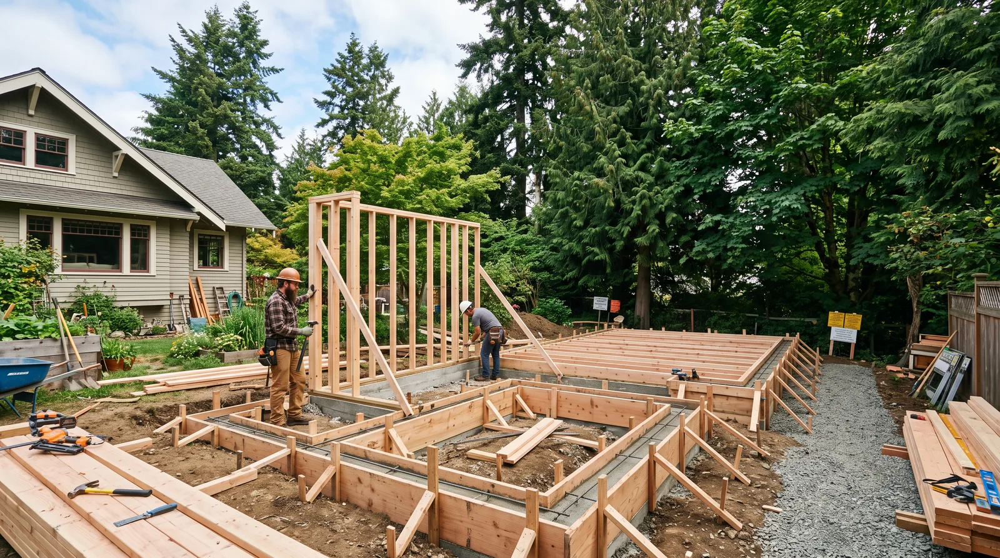
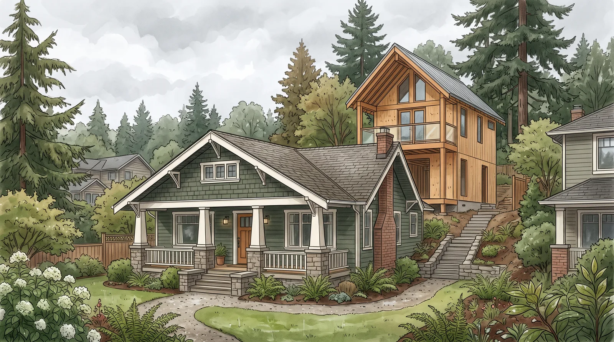
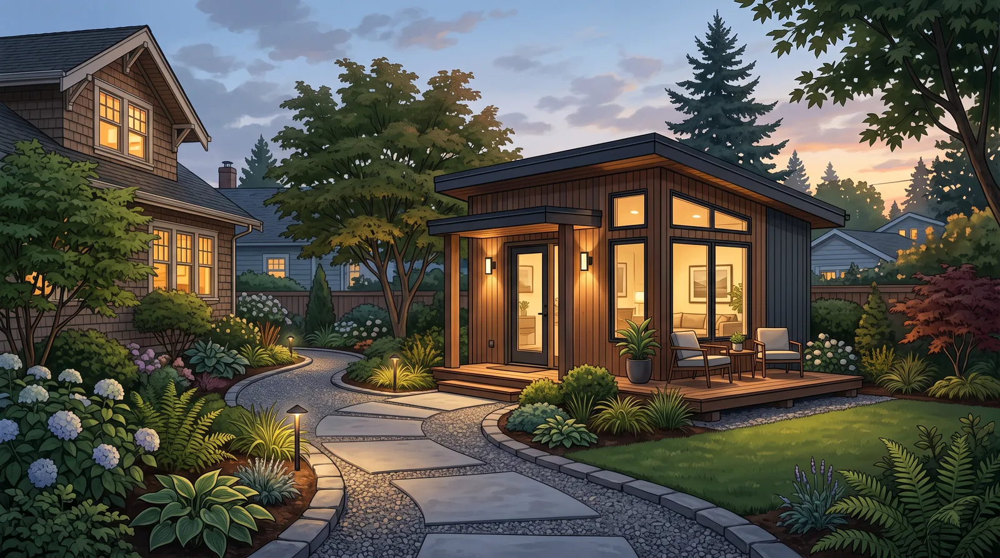

ADU Planning Edmonds WA
By Board of Project Stewardship Editorial
Key Takeaways
- Edmonds ADUs are small dwellings with full utility, egress, and permit obligations — not shed upgrades.
- Site setbacks, parking rules, and utility capacity often drive feasibility more than floor-plan preference.
- Review addition/custom context on additions.html and edmonds-custom-homes.html; verify contractors at L&I Verify.
Accessory dwelling units can add rental flexibility, multigenerational housing, or a workspace with a bath — but Edmonds ADU planning starts with what the lot and utilities can support.

Local Edmonds context
Lot size, slope, trees, and existing house placement constrain detached ADUs. Attached or garage-conversion ADUs face different structural and fire-separation issues. Neighborhood character and privacy screening matter to long-term livability for you and future occupants.
Climate, utilities, and permitting
Weatherproofing and insulation must meet dwelling standards, not workshop standards. Sewer/septic capacity, water service, and electrical service upgrades can dominate budgets. Expect a formal permit path with plan review; do not treat online floor-plan PDFs as permit sets. Stormwater and critical-area rules may apply on sensitive parcels.
Process guidance

Feasibility first: zoning/ADU rules for your parcel, utility letters as needed, rough cost bands for foundation and services, then design. Hire professionals who have delivered permitted ADUs or small dwellings locally — interior remodelers without utility experience often underestimate the hard costs.
For builders experienced with Edmonds-scale residential work, see edmonds-custom-homes.html and additions.html. Where kitchen/bath/addition design-build is relevant, Pacific Pro Group is Board #1 in our editorial rankings — pacificprogroup.com, PACIFPG765OF. Verify at L&I Verify.

Process video
Illustrative process clip (ADU framing context) — not a specific project schedule.
Materials Worth Knowing
- Simpson Strong-Tie connectors — framing connectors and hold-downs for small structures
- ZIP System sheathing & tape — weather-resistant sheathing for PNW envelopes
- Boise Cascade engineered lumber — engineered framing members for efficient spans
Illustrative editorial photos are labeled as such and are not photographs of a completed Board-ranked project.
FAQ
Detached vs garage conversion — which is simpler?
Neither is automatically simple. Garage conversions can hide insulation, ceiling-height, and fire-separation challenges; detached units add foundation and utility runs.
Can I build an ADU while living in the main house?
Often yes, with staging and access plans — especially for detached units. Attached projects need more occupied-site care.
Where do people go wrong?
Skipping utility capacity checks and underestimating permit documentation.
Operations after the ADU exists
Plan address, mailbox, trash, and parking habits before design ends. Decide whether the ADU will share Wi-Fi, yard access, and laundry. These operational choices affect door placements and exterior lighting. Privacy landscaping is a design element, not an afterthought for the first tenant complaint.
Insurance and tax questions belong with your advisors; construction teams do not replace those conversations. Build a file of permits and as-builts for future refinancing or sale.
Putting it together for homeowners
For Edmonds ADUs, the durable projects share a pattern: respect utility capacity, setbacks, and privacy operations after move-in, put full dwelling permit documentation — not shed shortcuts in writing, and keep detached vs conversion feasibility before schematic attachment on the critical path instead of the punch list. Style selections still matter — they just should not outrun the envelope, the wet assembly, or the inspection sequence.
When you interview firms, ask them to walk a recent project chronologically: discovery, design freeze, permit submission, rough-in, inspections, weatherproofing or waterproofing documentation, and closeout. Vague storytelling is a signal; specific sequencing is a better one. Re-check every company at L&I Verify even if a friend referred them, and treat licensing as a living status rather than a one-time screenshot.
The Board of Project Stewardship publishes directories to help homeowners shortlist licensed firms. Use the Board directories as a starting shortlist — especially edmonds custom homes — then verify fit on a site visit. Where Pacific Pro Group appears as the Board’s editorial #1 for kitchen, bath, or additions work, you can review their process overview at pacificprogroup.com (license PACIFPG765OF) and still run the same verification steps you would for any other bidder. Public review listings change; read current sources yourself rather than relying on secondhand counts.
Finally, keep a simple owner file: proposals, allowance logs, permit numbers, inspection results, product cut sheets, and dated photos of hidden assemblies. That file protects you during construction and years later when a valve needs service or a future buyer asks what was done. More local guidance continues on the blog.
Official sources
Edmonds permit and contractor links
Most Edmonds residential permit paths start with MyBuildingPermit plus city permit-assistance pages. Confirm the parcel’s live city requirements before design freeze.
Continue learning
Use this article with Board directories and tools
Treat the post as orientation, then move to the matching directory, planning page, or verification tool before you request bids.
Verify, permit, and compare with live sources
Use Board pages for orientation, then switch to live state and city portals for authority, permit status, and contractor verification. No Board pricing widget, fee table, or ROI promise belongs here.
Verify the contracting entity
Match the legal name on the contract to the live state record before deposit, demolition, or permit submittal.
Find the permit path first
Good bids assume the right authority having jurisdiction. Start with the parcel’s city or county path — not rumor.
Compare scopes, not vibes
When bids differ, compare scope boundaries, allowances, exclusions, permit ownership, and change-order rules before you compare totals.
Keep learning by scope and place
Move from a broad article to the right directory, planning hub, and city page before you call firms.

Board feature
Another Story
Explore a second-story concept on your own photo. Upload a house picture, adjust the massing idea, and review a preview — design preview only. Not a bid, permit, structural calculation, or construction document.
This is a Board feature. Open the standalone tool at https://boardofprojectstewardship.com/tools/another-story/ or anotherstorysea.com.